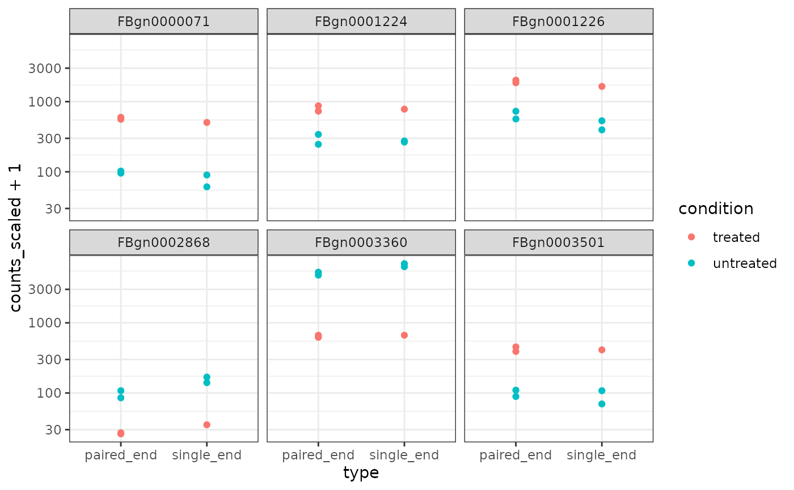

Case study - nesting
Maria Doyle, Peter MacCallum Cancer Centre1
Stefano Mangiola, Walter and Eliza Hall Institute2
Source:vignettes/nesting.Rmd
nesting.Rmd
library(dplyr) #> #> Attaching package: 'dplyr' #> The following objects are masked from 'package:stats': #> #> filter, lag #> The following objects are masked from 'package:base': #> #> intersect, setdiff, setequal, union library(ggplot2) library(purrr) library(tidybulk) #> #> Attaching package: 'tidybulk' #> The following objects are masked from 'package:dplyr': #> #> arrange, bind_cols, bind_rows, distinct, filter, full_join, #> group_by, inner_join, left_join, mutate, rename, right_join, #> rowwise, summarise, ungroup #> The following object is masked from 'package:stats': #> #> filter
Introduction
tidybulk allows for data nesting, using the tidyr utility nest. This is an extremely powerful tool as allows functional programming on transcriptomic data.
Nesting for performing the same analyses independently for subsets
Let’s suppose we want to perform differential transcript abundance analysis independently for two different data subsets to compare results after the test
pasilla_de = rpharma2020tidytranscriptomics::pasilla %>% # Convert SE object to tibble tidybulk %>% # Scale abundance for plotting identify_abundant(factor_of_interest=condition) %>% scale_abundance() %>% # Nest nest(data = -type) %>% # Differential analysis mutate(data = map( data, ~ test_differential_abundance(.x, ~ condition) )) %>% unnest(data) #> tidybulk says: All methods use raw counts, #> irrespective of if scale_abundance or adjust_abundance have been calculated, #> therefore it is essential to add covariates such as batch effects (if applicable) in the formula. #> tidybulk says: The design column names are "(Intercept), conditionuntreated" #> tidybulk says: to access the raw results (fitted GLM) do `attr(..., "internals")$edgeR` #> tidybulk says: All methods use raw counts, #> irrespective of if scale_abundance or adjust_abundance have been calculated, #> therefore it is essential to add covariates such as batch effects (if applicable) in the formula. #> tidybulk says: The design column names are "(Intercept), conditionuntreated" #> tidybulk says: to access the raw results (fitted GLM) do `attr(..., "internals")$edgeR`
Now we can for example compare the number of differentially transcribed genes and their co-expression
pasilla_de %>% nest(data = -type) %>% mutate( number_of_differential = map_int( data, ~ .x %>% pivot_transcript() %>% filter(FDR < 0.05) %>% nrow )) #> # A tibble: 2 x 3 #> type data number_of_differential #> <fct> <list> <int> #> 1 single_end <tibble [43,797 × 13]> 40 #> 2 paired_end <tibble [58,396 × 13]> 1270
We can easily see which genes overlap, and plot them
pasilla_de %>% filter(FDR < 0.05) %>% nest(data = -feature) %>% mutate(occurrences = map_int(data, ~ .x %>% distinct(type) %>% nrow)) %>% # We filter some of them filter(occurrences == 2) %>% slice(1:6) %>% unnest(data) %>% # And plot ggplot(aes(type, counts_scaled +1, color=condition)) + geom_point() + facet_wrap(~feature) + scale_y_log10() + theme_bw()

Nesting for applying to the full data frame analyses done of part of the data frame
Let’s suppose we want to indentify the markers that distingush epithelial from endothelial cells, but we want to then visualising those genes across many cell types to understand the background transcription.
cell_type_tt = rpharma2020tidytranscriptomics::cell_type_df %>% tidybulk(sample, symbol, count) markers_df = cell_type_tt %>% # Scale abundance for plotting identify_abundant(factor_of_interest=cell_type) %>% scale_abundance() %>% # Nest nest(data = everything()) %>% # investigate one cell type pair mutate(comparison_data = map( data, ~ .x %>% filter(cell_type %in% c("endothelial", "epithelial")) %>% mutate(cell_type = as.character(cell_type) ) )) %>% #test. We run on the two populations but we select data for all populations mutate(markers = map( comparison_data, ~ .x %>% # Differential transcription test_differential_abundance( ~ 0 + cell_type, .contrasts = c("cell_typeendothelial - cell_typeepithelial"), action="only", omit_contrast_in_colnames = TRUE ) %>% # Select markers filter(logFC > 2) %>% slice(1:10) %>% pull(symbol) )) %>% # Add marker info to original data mutate(data = map2(data, markers, ~ .x %>% filter(symbol%in% .y))) %>% select(data) %>% unnest(data) #> tidybulk says: All methods use raw counts, #> irrespective of if scale_abundance or adjust_abundance have been calculated, #> therefore it is essential to add covariates such as batch effects (if applicable) in the formula. #> tidybulk says: The design column names are "cell_typeendothelial, cell_typeepithelial" #> tidybulk says: to access the raw results (fitted GLM) do `attr(..., "internals")$edgeR`
Now we can plot our markers including the background
markers_df %>% ggplot(aes(cell_type, count_scaled +1 )) + geom_boxplot() + scale_y_log10() + theme_bw()

Contributing
If you want to suggest improvements for this workshop or ask questions, you can do so as described here.
Reproducibility
Record package and version information with sessionInfo
sessionInfo() #> R version 4.0.2 Patched (2020-09-24 r79253) #> Platform: x86_64-pc-linux-gnu (64-bit) #> Running under: Ubuntu 20.04.1 LTS #> #> Matrix products: default #> BLAS/LAPACK: /usr/lib/x86_64-linux-gnu/openblas-pthread/libopenblasp-r0.3.8.so #> #> locale: #> [1] LC_CTYPE=en_US.UTF-8 LC_NUMERIC=C #> [3] LC_TIME=en_US.UTF-8 LC_COLLATE=en_US.UTF-8 #> [5] LC_MONETARY=en_US.UTF-8 LC_MESSAGES=C #> [7] LC_PAPER=en_US.UTF-8 LC_NAME=C #> [9] LC_ADDRESS=C LC_TELEPHONE=C #> [11] LC_MEASUREMENT=en_US.UTF-8 LC_IDENTIFICATION=C #> #> attached base packages: #> [1] stats graphics grDevices utils datasets methods base #> #> other attached packages: #> [1] tidybulk_1.1.8 purrr_0.3.4 ggplot2_3.3.2 dplyr_1.0.2 #> #> loaded via a namespace (and not attached): #> [1] Rcpp_1.0.5 locfit_1.5-9.4 #> [3] lattice_0.20-41 tidyr_1.1.2 #> [5] utf8_1.1.4 assertthat_0.2.1 #> [7] rprojroot_1.3-2 digest_0.6.25 #> [9] R6_2.4.1 GenomeInfoDb_1.25.11 #> [11] backports_1.1.10 stats4_4.0.2 #> [13] evaluate_0.14 pillar_1.4.6 #> [15] zlibbioc_1.35.0 rlang_0.4.7 #> [17] S4Vectors_0.27.13 Matrix_1.2-18 #> [19] preprocessCore_1.51.0 rmarkdown_2.3 #> [21] pkgdown_1.6.1 desc_1.2.0 #> [23] splines_4.0.2 readr_1.3.1 #> [25] stringr_1.4.0 RCurl_1.98-1.2 #> [27] munsell_0.5.0 DelayedArray_0.15.9 #> [29] compiler_4.0.2 xfun_0.17 #> [31] pkgconfig_2.0.3 systemfonts_0.3.1 #> [33] BiocGenerics_0.35.4 htmltools_0.5.0 #> [35] tidyselect_1.1.0 SummarizedExperiment_1.19.6 #> [37] tibble_3.0.3 GenomeInfoDbData_1.2.3 #> [39] edgeR_3.31.4 IRanges_2.23.10 #> [41] matrixStats_0.57.0 fansi_0.4.1 #> [43] crayon_1.3.4 withr_2.3.0 #> [45] bitops_1.0-6 grid_4.0.2 #> [47] gtable_0.3.0 lifecycle_0.2.0 #> [49] magrittr_1.5 rpharma2020tidytranscriptomics_1.0.6 #> [51] scales_1.1.1 cli_2.0.2 #> [53] stringi_1.5.3 farver_2.0.3 #> [55] XVector_0.29.3 fs_1.5.0 #> [57] limma_3.45.14 ellipsis_0.3.1 #> [59] ragg_0.3.1 generics_0.0.2 #> [61] vctrs_0.3.4 tools_4.0.2 #> [63] Biobase_2.49.1 glue_1.4.2 #> [65] hms_0.5.3 parallel_4.0.2 #> [67] yaml_2.2.1 colorspace_1.4-1 #> [69] GenomicRanges_1.41.6 cpp11_0.2.1 #> [71] memoise_1.1.0 knitr_1.30